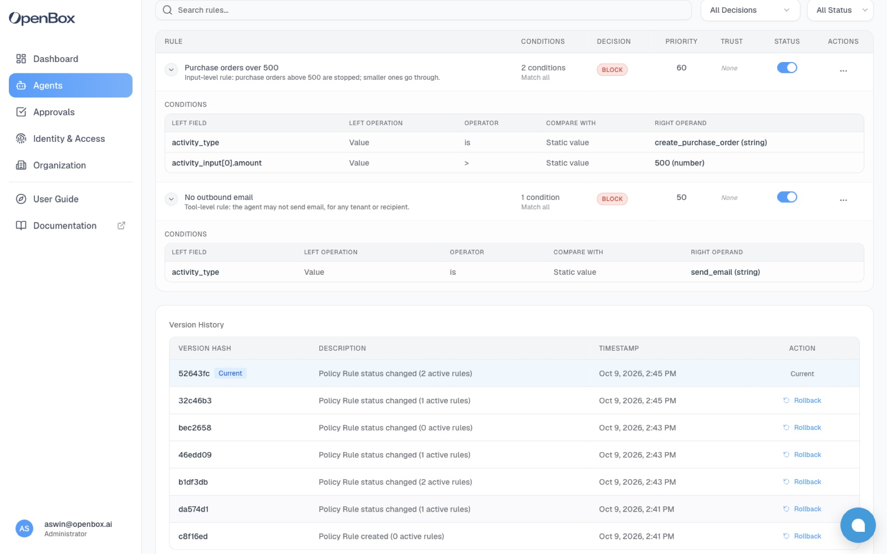
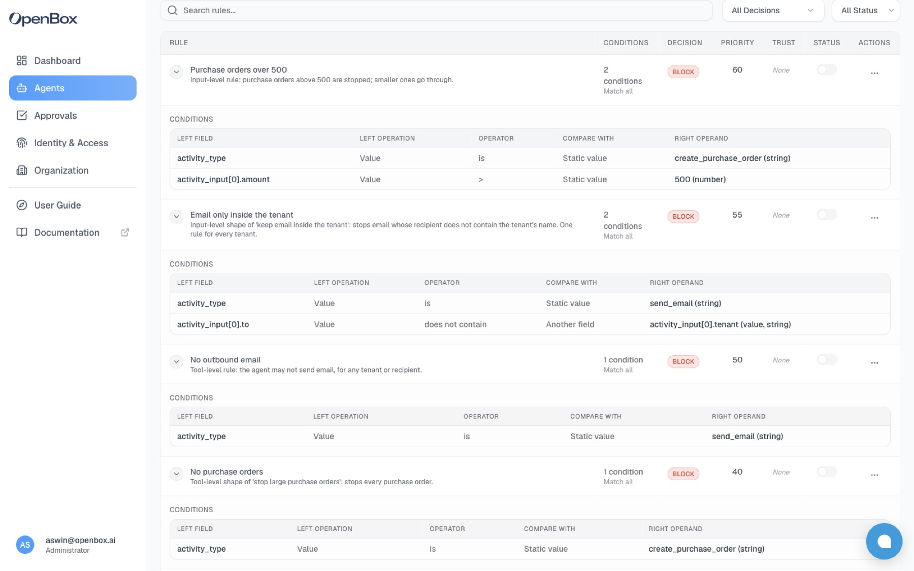
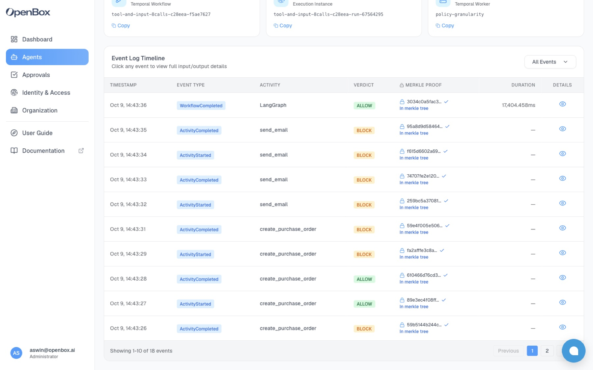
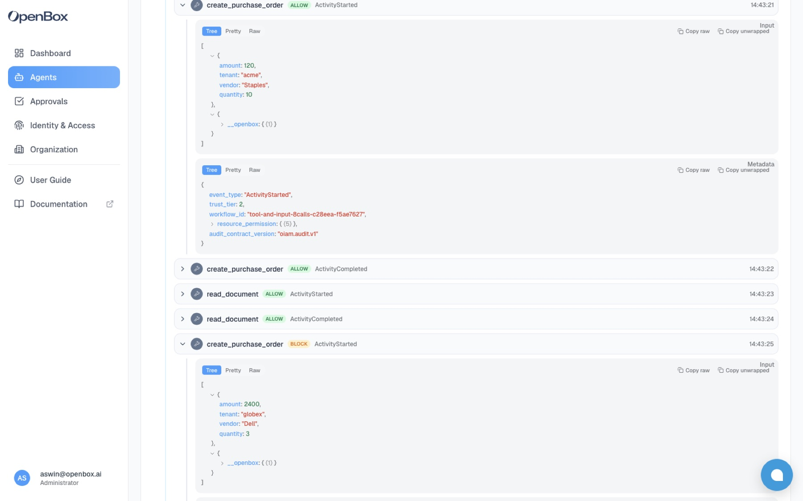

<title>OpenBox Policy Granularity</title>
<link rel="preconnect" href="https://fonts.googleapis.com">
<link rel="stylesheet" href="https://fonts.googleapis.com/css2?family=IBM+Plex+Mono:wght@400;500&family=IBM+Plex+Sans:wght@400;500;600&family=Fraunces:opsz,wght@9..144,500;9..144,600&display=swap">
<style>
/* Layout: one column; the call-by-policy-set matrix is the centrepiece, then the two rule shapes, then limits. */
:root {
  --paper: #f7f8f6;
  --ink: #17201c;
  --muted: #5b665f;
  --rule: #d6dcd6;
  --panel: #ffffff;
  --allow: #2f6b4f;
  --allow-tint: #e8f2ec;
  --block: #b3261e;
  --block-tint: #fbeceb;
  --accent: #1f4e79;
  --accent-tint: #e7eef6;
  --display: "Fraunces", Georgia, serif;
  --body: "IBM Plex Sans", system-ui, -apple-system, sans-serif;
  --mono: "IBM Plex Mono", ui-monospace, Menlo, monospace;
}
@media (prefers-color-scheme: dark) {
  :root:not([data-theme="light"]) {
    --paper: #121614; --ink: #e6ebe7; --muted: #9aa69f; --rule: #2c3530; --panel: #1a201d;
    --allow: #7cc49f; --allow-tint: #1c3328; --block: #f08a82; --block-tint: #3a1f1d;
    --accent: #8db8e0; --accent-tint: #1c2a38;
    color-scheme: dark;
  }
}
:root[data-theme="dark"] {
  --paper: #121614; --ink: #e6ebe7; --muted: #9aa69f; --rule: #2c3530; --panel: #1a201d;
  --allow: #7cc49f; --allow-tint: #1c3328; --block: #f08a82; --block-tint: #3a1f1d;
  --accent: #8db8e0; --accent-tint: #1c2a38;
  color-scheme: dark;
}
* { box-sizing: border-box; }
body { background: var(--paper); color: var(--ink); font: 15px/1.55 var(--body); }
.page { max-width: 1060px; margin: 0 auto; padding-inline: 20px; padding-block: 40px 56px; display: grid; gap: 36px; }
h1, h2 { font-family: var(--display); font-weight: 600; text-wrap: balance; margin: 0; letter-spacing: -0.01em; }
h1 { font-size: clamp(28px, 4.2vw, 42px); line-height: 1.12; }
h2 { font-size: 22px; }
h3 { margin: 0; font: 600 15px/1.3 var(--body); }
p { margin: 0; max-width: 68ch; }
.eyebrow { font: 500 12px/1 var(--mono); letter-spacing: 0.08em; text-transform: uppercase; color: var(--muted); }
header { display: grid; gap: 14px; }
.lede { font-size: 17px; color: var(--muted); }
code { font-family: var(--mono); font-size: 0.88em; }
section { display: grid; gap: 14px; }

.setup { display: grid; grid-template-columns: repeat(auto-fit, minmax(220px, 1fr)); gap: 1px; background: var(--rule); border: 1px solid var(--rule); }
.setup div { background: var(--panel); padding: 14px 16px; display: grid; gap: 4px; align-content: start; min-width: 0; }
.setup b { font-weight: 600; }
.setup span { color: var(--muted); font-size: 14px; }

.tablewrap { overflow-x: auto; border: 1px solid var(--rule); background: var(--panel); }
table { border-collapse: collapse; width: 100%; min-width: 640px; font-variant-numeric: tabular-nums; }
th, td { text-align: left; padding: 10px 14px; border-bottom: 1px solid var(--rule); vertical-align: middle; }
th { font: 500 12px/1.3 var(--mono); letter-spacing: 0.06em; text-transform: uppercase; color: var(--muted); }
th small { display: block; text-transform: none; letter-spacing: 0; font: 400 12px/1.3 var(--body); }
tr:last-child td { border-bottom: 0; }
tfoot td { font-weight: 600; background: var(--paper); }
.v { display: inline-block; font: 500 12px/1 var(--mono); padding: 4px 7px; border-radius: 3px; }
.v.ok { color: var(--allow); background: var(--allow-tint); }
.v.no { color: var(--block); background: var(--block-tint); }
.arg { font-family: var(--mono); font-size: 13px; }
.dim { color: var(--muted); }

.shapes { display: grid; grid-template-columns: 1fr 1fr; gap: 18px; }
@media (max-width: 760px) { .shapes { grid-template-columns: 1fr; } }
.shape { border: 1px solid var(--rule); background: var(--panel); padding: 16px 18px; display: grid; gap: 10px; align-content: start; min-width: 0; }
.shape.input { border-top: 3px solid var(--accent); }
.shape.tool { border-top: 3px solid var(--muted); }
.shape pre { margin: 0; overflow-x: auto; background: var(--paper); border: 1px solid var(--rule); padding: 10px 12px; font: 12.5px/1.6 var(--mono); }
.shape ul { margin: 0; padding-left: 18px; display: grid; gap: 4px; font-size: 14px; }

.scale { display: grid; grid-template-columns: repeat(4, 1fr); gap: 1px; background: var(--rule); border: 1px solid var(--rule); }
@media (max-width: 760px) { .scale { grid-template-columns: repeat(2, 1fr); } }
.scale div { background: var(--panel); padding: 14px 16px; display: grid; gap: 2px; }
.scale b { font: 600 28px/1.1 var(--display); font-variant-numeric: tabular-nums; }
.scale span { color: var(--muted); font-size: 13.5px; }
.scale .key b { color: var(--accent); }

figure { margin: 0; display: grid; gap: 8px; min-width: 0; }
figure img { width: 100%; border: 1px solid var(--rule); display: block; background: var(--panel); }
figcaption { font-size: 13.5px; color: var(--muted); }
figcaption b { color: var(--ink); font-weight: 600; }
.pair { display: grid; grid-template-columns: 1fr 1fr; gap: 18px; }
@media (max-width: 760px) { .pair { grid-template-columns: 1fr; } }

.guide td:first-child { width: 42%; }
.compare td { vertical-align: top; font-size: 14px; }
.compare td:first-child { width: 20%; font-weight: 600; }
.compare td:not(:first-child) { width: 40%; }
.verdict { border-left: 3px solid var(--accent); padding: 4px 0 4px 16px; font-family: var(--display); font-size: 20px; line-height: 1.4; max-width: 62ch; }
.limits { display: grid; gap: 10px; }
.limits li { max-width: 80ch; }
.notes { font-size: 13.5px; color: var(--muted); display: grid; gap: 6px; }
.notes p { max-width: none; }

.intent { border: 1px solid var(--rule); background: var(--panel); display: grid; break-inside: avoid; }
.intent > header { padding: 14px 18px; border-bottom: 1px solid var(--rule); display: grid; gap: 4px; }
.intent > header h3 { font: 600 18px/1.3 var(--display); }
.intent > header p { color: var(--muted); font-size: 14px; }
.shapes2 { display: grid; grid-template-columns: 1fr 1fr; }
@media (max-width: 760px) { .shapes2 { grid-template-columns: 1fr; } }
.shapes2 > div { padding: 14px 18px; display: grid; gap: 10px; align-content: start; min-width: 0; }
.shapes2 > div + div { border-left: 1px solid var(--rule); }
@media (max-width: 760px) { .shapes2 > div + div { border-left: 0; border-top: 1px solid var(--rule); } }
.shapes2 .label { font: 500 12px/1 var(--mono); letter-spacing: 0.08em; text-transform: uppercase; color: var(--muted); }
.shapes2 .precise .label { color: var(--accent); }
.shapes2 pre { margin: 0; overflow-x: auto; white-space: pre-wrap; background: var(--paper); border: 1px solid var(--rule); padding: 10px 12px; font: 12.5px/1.6 var(--mono); }
.calls { display: grid; gap: 6px; margin: 0; padding: 0; list-style: none; font-size: 13.5px; }
.calls li { display: flex; gap: 10px; align-items: center; flex-wrap: wrap; }
.calls .v { min-width: 72px; text-align: center; }
.tally { font-size: 13.5px; color: var(--muted); }
.tally b { color: var(--ink); }
.intent > footer { padding: 12px 18px; border-top: 1px solid var(--rule); background: var(--paper); font-size: 14px; }
</style>

<main class="page">
  <header>
    <div class="eyebrow">OpenBox · policy granularity · 9 Oct 2026</div>
    <h1>Rules grow with your controls. Tenants, documents and amounts don't add rules.</h1>
    <p class="lede">OpenBox can match a rule on any input a tool receives, but you don't have to. Most controls are one condition on the tool name, and that one rule covers every call to the tool. Reach into an input only when its value decides the outcome, such as an amount over a limit. We ran a multi-tenant agent under three policy sets to show it.</p>
  </header>

  <section>
    <div class="eyebrow">The setup</div>
    <div class="setup">
      <div><b>Agent</b><span>A LangGraph procurement agent with 3 tools: <code>read_document</code>, <code>create_purchase_order</code>, <code>send_email</code>. Every tool call carries the tenant it serves.</span></div>
      <div><b>Workload</b><span>The same 8 calls every run, for 3 tenants (acme, globex, initech). Purchase orders of 120, 2,400, 499 and 501.</span></div>
      <div><b>Policy sets</b><span>No rules. Then 1 tool-level rule. Then that rule plus 1 input-level rule.</span></div>
      <div><b>Governed by</b><span>OpenBox, through the LangGraph SDK. Every call is evaluated before it runs.</span></div>
    </div>
  </section>

  <section>
    <h2>Same calls, three policy sets</h2>
    <div class="tablewrap">
      <table>
        <thead><tr>
          <th>Call</th><th>Input</th>
          <th>No rules<small>0 rules</small></th>
          <th>Tool level<small>1 rule</small></th>
          <th>Tool + input level<small>2 rules</small></th>
        </tr></thead>
        <tbody>
          <tr><td>acme · <code>read_document</code></td><td class="arg">purchase-request-1001</td><td><span class="v ok">RAN</span></td><td><span class="v ok">RAN</span></td><td><span class="v ok">RAN</span></td></tr>
          <tr><td>acme · <code>create_purchase_order</code></td><td class="arg">amount 120</td><td><span class="v ok">RAN</span></td><td><span class="v ok">RAN</span></td><td><span class="v ok">RAN</span></td></tr>
          <tr><td>globex · <code>read_document</code></td><td class="arg">purchase-request-2001</td><td><span class="v ok">RAN</span></td><td><span class="v ok">RAN</span></td><td><span class="v ok">RAN</span></td></tr>
          <tr><td>globex · <code>create_purchase_order</code></td><td class="arg">amount 2,400</td><td><span class="v ok">RAN</span></td><td><span class="v ok">RAN</span></td><td><span class="v no">BLOCKED</span></td></tr>
          <tr><td>initech · <code>create_purchase_order</code></td><td class="arg">amount 499</td><td><span class="v ok">RAN</span></td><td><span class="v ok">RAN</span></td><td><span class="v ok">RAN</span></td></tr>
          <tr><td>initech · <code>create_purchase_order</code></td><td class="arg">amount 501</td><td><span class="v ok">RAN</span></td><td><span class="v ok">RAN</span></td><td><span class="v no">BLOCKED</span></td></tr>
          <tr><td>acme · <code>send_email</code></td><td class="arg">finance@acme.example</td><td><span class="v ok">RAN</span></td><td><span class="v no">BLOCKED</span></td><td><span class="v no">BLOCKED</span></td></tr>
          <tr><td>globex · <code>send_email</code></td><td class="arg">sales@dell.example</td><td><span class="v ok">RAN</span></td><td><span class="v no">BLOCKED</span></td><td><span class="v no">BLOCKED</span></td></tr>
        </tbody>
        <tfoot><tr><td>Stopped</td><td></td><td>0 of 8</td><td>2 of 8</td><td>4 of 8</td></tr></tfoot>
      </table>
    </div>
    <p>The tool-level rule stopped both emails without naming a tenant or a recipient. The input-level rule split purchase orders on the amount: 499 ran, 501 was stopped. Nothing else changed.</p>
  </section>

  <section>
    <h2>The two rules</h2>
    <div class="shapes">
      <div class="shape tool">
        <div class="eyebrow">Tool level · 1 condition</div>
        <h3>No outbound email</h3>
        <pre>activity_type is send_email
→ BLOCK</pre>
        <ul>
          <li>Matches every <code>send_email</code> call, for any tenant, recipient or subject</li>
          <li>Never needs updating when a tenant or recipient is added</li>
          <li>Use for: "this agent may never …", "… always needs approval"</li>
        </ul>
      </div>
      <div class="shape input">
        <div class="eyebrow">Input level · 2 conditions</div>
        <h3>Purchase orders over 500</h3>
        <pre>activity_type is create_purchase_order
AND activity_input[0].amount > 500
→ BLOCK</pre>
        <ul>
          <li>The same tool, split by one value the business cares about</li>
          <li>Any numeric field works the same way: amount, quantity, page count</li>
          <li>Use only when a value decides the outcome</li>
        </ul>
      </div>
    </div>
    <figure><figcaption><b>The agent's rules in OpenBox.</b> One rule with 1 condition, one with 2. This is the entire policy for every tenant the agent serves.</figcaption></figure>
  </section>


  <section>
    <h2>Same intent, two shapes</h2>
    <p>Every control can be written broadly, on the tool alone, or precisely, on the tool plus one input. Here are three intents, each written both ways and run on the same 8 calls, one rule at a time. The broad shape is always one condition. The precise shape adds one more, and it is still one rule for every tenant.</p>

    <article class="intent">
      <header><div class="eyebrow">Intent 1</div><h3>Stop large purchase orders</h3><p>The intent names a value: the amount.</p></header>
      <div class="shapes2">
        <div class="broad"><div class="label">Broad · tool level</div>
          <pre>activity_type is create_purchase_order
→ BLOCK</pre>
          <ul class="calls"><li><span class="v no">BLOCKED</span><span>acme · 120</span></li><li><span class="v no">BLOCKED</span><span>globex · 2,400</span></li><li><span class="v no">BLOCKED</span><span>initech · 499</span></li><li><span class="v no">BLOCKED</span><span>initech · 501</span></li></ul>
          <div class="tally"><b>4 of 4 stopped.</b> Also stops the 120 and 499 orders, which the intent allows.</div></div>
        <div class="precise"><div class="label">Precise · input level</div>
          <pre>activity_type is create_purchase_order
AND activity_input[0].amount &gt; 500
→ BLOCK</pre>
          <ul class="calls"><li><span class="v ok">RAN</span><span>acme · 120</span></li><li><span class="v no">BLOCKED</span><span>globex · 2,400</span></li><li><span class="v ok">RAN</span><span>initech · 499</span></li><li><span class="v no">BLOCKED</span><span>initech · 501</span></li></ul>
          <div class="tally"><b>2 of 4 stopped.</b> Exactly the orders over 500.</div></div>
      </div>
      <footer><b>Use the precise shape.</b> The intent is about the amount, so the rule has to read the amount.</footer>
    </article>

    <article class="intent">
      <header><div class="eyebrow">Intent 2</div><h3>Keep email inside the tenant</h3><p>The intent names a relationship between two inputs: who the email goes to, and which tenant it is for.</p></header>
      <div class="shapes2">
        <div class="broad"><div class="label">Broad · tool level</div>
          <pre>activity_type is send_email
→ BLOCK</pre>
          <ul class="calls"><li><span class="v no">BLOCKED</span><span>acme → finance@acme.example</span></li><li><span class="v no">BLOCKED</span><span>globex → sales@dell.example</span></li></ul>
          <div class="tally"><b>2 of 2 stopped.</b> Also stops acme emailing its own finance team.</div></div>
        <div class="precise"><div class="label">Precise · input level</div>
          <pre>activity_type is send_email
AND activity_input[0].to does not contain
    activity_input[0].tenant
→ BLOCK</pre>
          <ul class="calls"><li><span class="v ok">RAN</span><span>acme → finance@acme.example</span></li><li><span class="v no">BLOCKED</span><span>globex → sales@dell.example</span></li></ul>
          <div class="tally"><b>1 of 2 stopped.</b> Only the email leaving its tenant.</div></div>
      </div>
      <footer><b>Use the precise shape,</b> and note it compares two inputs instead of listing domains. One rule covers acme, globex and every tenant added later. If the intent were "this agent never sends email", the broad shape would be the right one.</footer>
    </article>

    <article class="intent">
      <header><div class="eyebrow">Intent 3</div><h3>Keep the agent out of Globex's documents</h3><p>The intent names one tenant.</p></header>
      <div class="shapes2">
        <div class="broad"><div class="label">Broad · tool level</div>
          <pre>activity_type is read_document
→ BLOCK</pre>
          <ul class="calls"><li><span class="v no">BLOCKED</span><span>acme · purchase-request-1001</span></li><li><span class="v no">BLOCKED</span><span>globex · purchase-request-2001</span></li></ul>
          <div class="tally"><b>2 of 2 stopped.</b> Also locks acme out of its own documents.</div></div>
        <div class="precise"><div class="label">Precise · input level</div>
          <pre>activity_type is read_document
AND activity_input[0].tenant is globex
→ BLOCK</pre>
          <ul class="calls"><li><span class="v ok">RAN</span><span>acme · purchase-request-1001</span></li><li><span class="v no">BLOCKED</span><span>globex · purchase-request-2001</span></li></ul>
          <div class="tally"><b>1 of 2 stopped.</b> Only Globex's document.</div></div>
      </div>
      <footer><b>Use the precise shape,</b> but only for the tenants that are exceptions. This is the one shape where a value is written into the rule, so it is the only kind that adds a rule per tenant, and only per exceptional tenant.</footer>
    </article>

    <figure><figcaption><b>The shapes as OpenBox stores them.</b> One-condition rules match on the tool. The two-condition rules add an amount, a tenant, or a comparison with another field ("Another field": the recipient against the tenant). Each shape ran on its own, so the rules shown here are switched off.</figcaption></figure>
  </section>

  <section class="acs">
    <h2>The same six shapes in Microsoft's Agent Control Specification</h2>
    <p>Microsoft announced the Agent Control Specification (ACS) at Build 2026 as the policy layer of its open-source Agent Governance Toolkit. We wrote the same six rules as ACS policies and sent the same 8 tool calls through Microsoft's own runtime (<code>agent-control-spec</code> 0.4.0a4, enforce mode). It matched OpenBox on every call.</p>
    <div class="tablewrap">
      <table>
        <thead><tr><th>Intent</th><th>Shape</th><th>OpenBox<small>stopped</small></th><th>Microsoft ACS<small>stopped</small></th><th>Calls that differ</th></tr></thead>
        <tbody>
          <tr><td rowspan="2">Stop large purchase orders</td><td>Broad · tool only</td><td>4 of 4</td><td>4 of 4</td><td>none</td></tr>
          <tr><td>Precise · <code>amount &gt; 500</code></td><td>2 of 4</td><td>2 of 4</td><td>none</td></tr>
          <tr><td rowspan="2">Keep email inside the tenant</td><td>Broad · tool only</td><td>2 of 2</td><td>2 of 2</td><td>none</td></tr>
          <tr><td>Precise · recipient vs tenant</td><td>1 of 2</td><td>1 of 2</td><td>none</td></tr>
          <tr><td rowspan="2">Keep the agent out of Globex's documents</td><td>Broad · tool only</td><td>2 of 2</td><td>2 of 2</td><td>none</td></tr>
          <tr><td>Precise · <code>tenant is globex</code></td><td>1 of 2</td><td>1 of 2</td><td>none</td></tr>
        </tbody>
      </table>
    </div>
    <article class="intent">
      <header><div class="eyebrow">One rule, two products</div><h3>Purchase orders over 500</h3><p>The same two conditions: which tool, and the value of one input.</p></header>
      <div class="shapes2">
        <div><div class="label">OpenBox rule</div>
          <pre>activity_type is create_purchase_order
AND activity_input[0].amount &gt; 500
→ BLOCK</pre></div>
        <div class="precise"><div class="label">Microsoft ACS · Rego</div>
          <pre>default verdict := {"decision": "allow"}

verdict := {"decision": "deny"} if {
  input.tool.id == "create_purchase_order"
  input.policy_target.value.amount &gt; 500
}</pre></div>
      </div>
      <footer>Microsoft's own sample policies follow the same split. Their bank agent example blocks <code>freeze_account</code> on the tool name alone and blocks transfers with <code>amount &gt; 50000</code>: one tool-level rule, one input-level rule.</footer>
    </article>
  </section>

  <section class="acs">
    <h2>How Microsoft manages policy, and where OpenBox matches it</h2>
    <p>Both products check each tool call before it runs, using rules that match on the tool and, if needed, its inputs. They differ in where the rules live and what is kept afterwards.</p>
    <div class="tablewrap">
      <table class="compare">
        <thead><tr><th></th><th>OpenBox</th><th>Microsoft ACS</th></tr></thead>
        <tbody>
          <tr><td>Where policy lives</td><td>Rules on each agent, managed in the dashboard or through the rules API</td><td>A YAML manifest per agent, kept in the codebase, that binds policies to points in the agent loop</td></tr>
          <tr><td>When a call is checked</td><td>Before each tool call, through the framework SDK</td><td>At up to eight points, including <code>pre_tool_call</code>, the one used here</td></tr>
          <tr><td>What a rule can see</td><td>The tool name and every input (<code>activity_input</code>)</td><td>The tool name and every argument (<code>policy_target</code>), plus anything the host adds</td></tr>
          <tr><td>How rules are written</td><td>Conditions chosen in a form: field, operator, value or another field</td><td>Rego or Cedar code. The toolkit also ships a simpler YAML list of name, condition, action and priority</td></tr>
          <tr><td>Decisions</td><td>ALLOW, CONSTRAIN, REQUIRE_APPROVAL, BLOCK, HALT</td><td>allow, deny, transform, plus warn and escalate (deny until a person approves)</td></tr>
          <tr><td>Ordering</td><td>Priority 1–100, first match wins</td><td>Written into the policy, typically an <code>else</code> chain where the first match wins</td></tr>
          <tr><td>When nothing matches</td><td>Allow</td><td>Whatever the policy's default says. The toolkit's YAML engine denies unless <code>default_action: allow</code> is set</td></tr>
          <tr><td>Before going live</td><td>Dry-run each rule against sample inputs</td><td><code>evaluate_only</code> mode: decide on live traffic without acting</td></tr>
          <tr><td>Sharing rules across agents</td><td>Not built in. Copy rules to each agent (a script or the Policy Studio)</td><td><code>extends</code>: a manifest can inherit parent manifests, such as a company baseline</td></tr>
          <tr><td>What is kept afterwards</td><td>Every call's inputs and verdict in a signed session record, viewable in the dashboard</td><td>Decision events that by rule leave out tool arguments. Storing and viewing them is up to you</td></tr>
          <tr><td>Maturity</td><td>Running product</td><td>Draft specification, alpha runtime (0.4.0-alpha)</td></tr>
        </tbody>
      </table>
    </div>
  </section>

  <section>
    <h2>Why this matters</h2>
    <ul class="limits">
      <li><b>The concern about thousands of rules isn't specific to OpenBox.</b> It applies to any tool that can read inputs, and Microsoft's own model handles it the same way: one rule per control, with inputs read only when a value decides the outcome. In both products, adding tenants doesn't add rules.</li>
      <li><b>OpenBox rules follow the model the industry is standardising on.</b> Each rule here translated one to one into an ACS policy and gave the same verdict on every call. Rules written for OpenBox today don't lock you into a policy model nobody else uses.</li>
      <li><b>What the standard leaves to you, OpenBox provides.</b> ACS defines the decision. Where rules are stored, who can change them, how they are tested, and what record is kept are left to whoever runs it. OpenBox covers those: rules managed per agent, a dry-run before each change, and a signed record that keeps the input behind each verdict. ACS's events deliberately leave those inputs out.</li>
      <li><b>One gap to plan for.</b> ACS can inherit a shared baseline from a parent manifest. OpenBox has no shared rule sets yet, so agents that share controls each get their own copy, applied by script or by the Policy Studio.</li>
    </ul>
  </section>

  <section>
    <h2>Adding tenants adds no rules</h2>
    <p>We reran the two-rule set with 20 more tenants. Each new tenant raised a purchase order and sent an email.</p>
    <div class="scale">
      <div><b>23</b><span>tenants</span></div>
      <div><b>48</b><span>tool calls</span></div>
      <div class="key"><b>2</b><span>rules, unchanged</span></div>
      <div><b>34</b><span>calls stopped</span></div>
    </div>
    <p>All 22 emails were stopped by the tool-level rule. The 12 purchase orders over 500 were stopped and the 12 at or under 500 ran. The rule count depends on how many distinct controls the agent needs. It doesn't depend on how many tenants, documents or values flow through it. An agent serving 1,000 enterprises with these two controls still has two rules.</p>
  </section>

  <section>
    <h2>What OpenBox recorded</h2>
    <div class="pair">
      <figure><figcaption><b>One verdict per call.</b> The emails and the orders over 500 are BLOCK. Every other call is ALLOW, and each event is in the session's signed record.</figcaption></figure>
      <figure><figcaption><b>The input behind the verdict.</b> The 120 order shows ALLOW and the 2,400 order BLOCK, with the amount the rule compared right there in the captured input.</figcaption></figure>
    </div>
  </section>

  <section>
    <h2>Which kind of rule to write</h2>
    <div class="tablewrap guide">
      <table>
        <thead><tr><th>If the control is …</th><th>Write</th><th>Example</th></tr></thead>
        <tbody>
          <tr><td>The agent may never use a tool</td><td>Tool level</td><td><code>activity_type is send_email</code> → BLOCK</td></tr>
          <tr><td>A tool always needs a person to approve</td><td>Tool level</td><td><code>activity_type is wire_transfer</code> → REQUIRE_APPROVAL</td></tr>
          <tr><td>A tool is fine up to a limit</td><td>Input level, number</td><td><code>amount &gt; 500</code>, <code>quantity &gt;= 100</code></td></tr>
          <tr><td>A tool is fine except for certain destinations</td><td>Input level, text</td><td><code>to contains @competitor.example</code>, <code>path starts_with /finance/</code></td></tr>
          <tr><td>A relationship between two inputs must hold</td><td>Input level, field to field</td><td><code>to does not contain tenant</code></td></tr>
          <tr><td>One tenant needs a stricter rule than the rest</td><td>Input level, on the tenant field only</td><td><code>tenant is globex</code> AND <code>amount &gt; 100</code></td></tr>
        </tbody>
      </table>
    </div>
    <p class="verdict">Start with one tool-level rule per control. Add an input condition only where the answer to "should this run?" depends on a value. Everything the tool receives is available to a rule, and none of it has to be used.</p>
  </section>

  <section>
    <h2>What to know</h2>
    <ul class="limits">
      <li><b>Rules belong to an agent.</b> There are no org-wide or role-wide policy rules today. Agents that should share a control set each get the same rules. That's a short script against the rules API (this demo applies its policy sets that way), and the Policy Studio can generate the rules from a contract.</li>
      <li><b>Calls that match no rule are allowed.</b> Write explicit BLOCK or REQUIRE_APPROVAL rules for what must not happen. Every rule needs at least one condition. To match every call, use a condition that is always true, such as <code>activity_type exists</code>.</li>
      <li><b>Numeric comparisons need numbers.</b> <code>amount &gt; 500</code> works when the tool receives a number. If a tool passes amounts as text (<code>"600"</code>), convert them in the tool's signature first.</li>
      <li><b>Test a rule before it goes live.</b> Each rule can be dry-run against sample inputs before activation; the demo checks 499, 500 and 501. A dry-run tests one rule on its own, not its interaction with the agent's other rules.</li>
    </ul>
  </section>

  <section class="notes">
    <div class="eyebrow">Method</div>
    <p>Run on 9 Oct 2026 against a local OpenBox stack (develop) with the OpenBox LangGraph SDK for Python. The agent makes its tool calls from a fixed script with no model involved, so every run sends identical calls and only the policy set changes. Rules were created through the OpenBox rules API, dry-run on sample inputs, activated, and confirmed loaded in the policy engine before each run. Outcomes come from the agent's own record of each call and match the verdicts OpenBox stored.</p>
    <p>Microsoft ACS: the six rules are written as Rego policies (<code>acs/policy/</code>), each bound to <code>pre_tool_call</code> by its own manifest. The same 8 calls went through <code>agent-control-spec</code> 0.4.0a4 from PyPI in enforce mode (<code>acs/run_acs.py</code>, run in a Linux x86-64 container because that is the only published wheel). The comparison table draws on the ACS specification and the Agent Governance Toolkit repository as of 9 Oct 2026.</p>
  </section>
</main>
